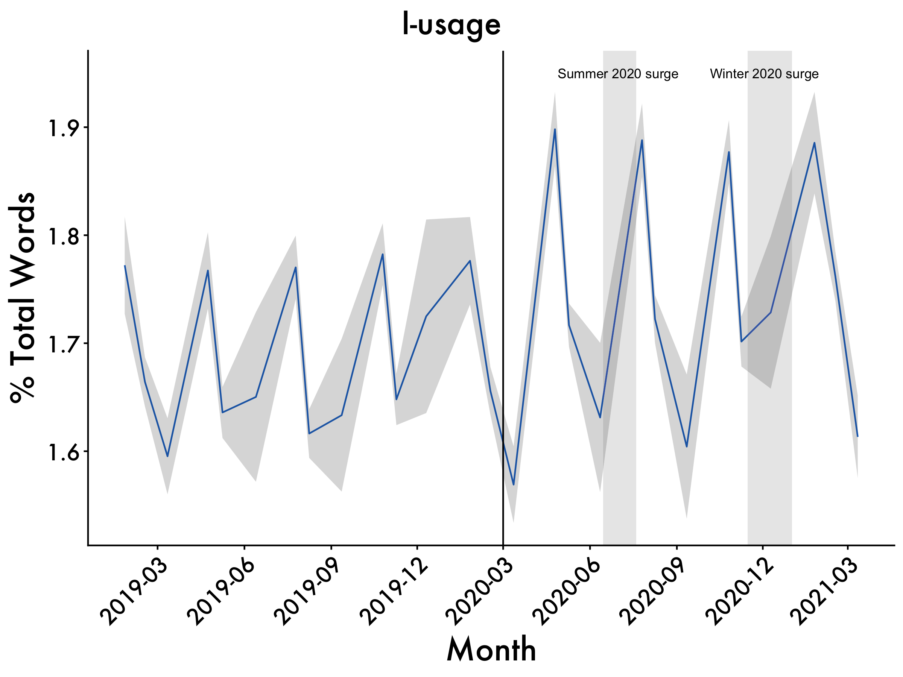

setwd("~/Desktop/Coding-Boot-Camp/Data-viz-basics")
#change to your own WD. you can do that by modifying the file path or go session (on the upper bar) --> set working directory)üé® R Data Visualization Adventure
Getting everything set up
Set Working Directory
Loading datasets
Datasets can either be built-in or can be loaded from external sources in R.
Built-in datasets refer to the datasets already provided within R. For the first part, we will be using a dataset called the air quality dataset, which pertains to the daily air quality measurements in New York from May to September 1973. This dataset consists of more than 100 observations for 6 variables
Ozone(mean parts per billion)Solar.R(Solar Radiation)Wind(Average wind speed)Temp(maximum daily temperature in Fahrenheit)Month(month of observation)Day(Day of the month)
data(airquality)In case of an External data source (CSV, Excel, text, HTML file etc.), simply set the folder containing the data as the working directory with the setwd() command. Alternatively, you can set the path to the file if you don’t want to change your directory, but this is not recommended.
setwd("~/Desktop/Coding-Boot-Camp/Data-viz-basics")Now, load the file with the help of the read command. In this case, data is in the form of a CSV file named airquality.csv which can be downloaded from here.
airquality <- read.csv('airquality.csv',header=TRUE, sep=",")
One small (but important) thing to note is that you can name objects in R using both <- and = which basically tells the computer “save the csv under this name”. In our case save ‘airquality.csv’ as airquality
The above code reads the file airquality.csv into a data frame airquality. Header=TRUE specifies that the data includes a header and sep=”,” specifies that the values in data are separated by commas.
Data Exploration
Once the data has been loaded into the global environment (workspace), we need to explore it to get an idea about its structure and what we have to work with.
To do so, we can use several different functions within R
strdisplays the internal structure of an R object and gives a quick overview of the rows and columns of the dataset.
str(airquality)'data.frame': 153 obs. of 6 variables:
$ Ozone : int 41 36 12 18 NA 28 23 19 8 NA ...
$ Solar.R: int 190 118 149 313 NA NA 299 99 19 194 ...
$ Wind : num 7.4 8 12.6 11.5 14.3 14.9 8.6 13.8 20.1 8.6 ...
$ Temp : int 67 72 74 62 56 66 65 59 61 69 ...
$ Month : int 5 5 5 5 5 5 5 5 5 5 ...
$ Day : int 1 2 3 4 5 6 7 8 9 10 ...head(data,n)andtail(data,n)The head outputs the top n elements in the dataset while the tail method outputs the bottom n. The default value for n in R is 10 but you can obviously specify it to be something else if needed :).
head(airquality) Ozone Solar.R Wind Temp Month Day
1 41 190 7.4 67 5 1
2 36 118 8.0 72 5 2
3 12 149 12.6 74 5 3
4 18 313 11.5 62 5 4
5 NA NA 14.3 56 5 5
6 28 NA 14.9 66 5 6tail(airquality) Ozone Solar.R Wind Temp Month Day
148 14 20 16.6 63 9 25
149 30 193 6.9 70 9 26
150 NA 145 13.2 77 9 27
151 14 191 14.3 75 9 28
152 18 131 8.0 76 9 29
153 20 223 11.5 68 9 30summary(airquality)The summary method displays descriptive statistics for every variable in the dataset, depending upon the type of the variable. We can see at a glance the mean, median, max and the quartile values of the variables, as well as an missing observations which is especially valuable.
summary(airquality) Ozone Solar.R Wind Temp Month
Min. : 1.0 Min. : 7 Min. : 1.70 Min. :56.0 Min. :5.00
1st Qu.: 18.0 1st Qu.:116 1st Qu.: 7.40 1st Qu.:72.0 1st Qu.:6.00
Median : 31.5 Median :205 Median : 9.70 Median :79.0 Median :7.00
Mean : 42.1 Mean :186 Mean : 9.96 Mean :77.9 Mean :6.99
3rd Qu.: 63.2 3rd Qu.:259 3rd Qu.:11.50 3rd Qu.:85.0 3rd Qu.:8.00
Max. :168.0 Max. :334 Max. :20.70 Max. :97.0 Max. :9.00
NA's :37 NA's :7
Day
Min. : 1.0
1st Qu.: 8.0
Median :16.0
Mean :15.8
3rd Qu.:23.0
Max. :31.0
Basic Plots
The graphics package is used for plotting base graphs like scatter plot, box plot etc. and is already build into R. A complete list of functions with help pages can be obtained by typing : library(help = "graphics").
The Plot function
The plot() function is a generic function for plotting of R objects. When we run the code below, we get a scatter/dot plot here wherein each dot represents the value of the Ozone in mean parts per billion.
plot(airquality$Ozone)
Let’s now advance this some and plot a graph between the Ozone and Wind values to study the relationship between the two. The plot shows that Wind and Ozone values have a somewhat negative correlation.
plot(airquality$Ozone, airquality$Wind)What happens when we use plot command with the entire dataset without selecting any particular columns?
We get a matrix of scatterplots which is a correlation matrix of all the columns. The plot above instantly shows that:
The level of Ozone and Temperature is correlated positively.
Wind speed is negatively correlated to both Temperature and Ozone level.
We can quickly discover the relationship between variables by merely looking at the plots drawn between them.
plot(airquality)Using arguments with the plot() function
We can easily style our charts by playing with the arguments of the plot() function.
The plot function has an argument called type which can take in values like p: points, l: lines, b: both etc. This decides the shape of the output graph.
# points and lines
plot(airquality$Ozone, type= "b")# high density vertical lines.
plot(airquality$Ozone, type= "h")Labels and Titles
We can also label the X and the Y axis and give a title to our plot. Additionally, we also have the option of giving color to the plot.
plot(airquality$Ozone, xlab = 'ozone Concentration', ylab = 'No of Instances', main = 'Ozone levels in NY city', col = 'green')Barplot
In a bar plot, data is represented in the form of rectangular bars and the length of the bar is proportional to the value of the variable or column in the dataset. Both horizontal, as well as a vertical bar chart, can be generated by tweaking the horiz parameter.
# Horizontal bar plot
barplot(airquality$Ozone, main = 'Ozone Concenteration in air',xlab = 'ozone levels', col= 'green',horiz = TRUE)Vertical Barplot
# Horizontal bar plot
barplot(airquality$Ozone, main = 'Ozone Concenteration in air',xlab = 'ozone levels', col= 'green',horiz = F)Histogram
A histogram is quite similar to a bar chart except that it groups values into continuous ranges. A histogram represents the frequencies of values of a variable bucketed into ranges. We get a histogram of the Solar.R values with hist(airquality$Solar.R).
hist(airquality$Solar.R)By giving an appropriate value for the color argument (e.g., col='red'), we can obtain a colored histogram as well.
hist(airquality$Solar.R, main = 'Solar Radiation values in air',xlab = 'Solar rad.', col='red')Boxplot
We have seen how the summary() command in R can display the descriptive statistics for every variable in the dataset. Boxplot does the same albeit graphically in the form of quartiles (e.g.,lowest 25% of the data, the middle 50% of the data, and the highest 25% of the data). It is again very straightforward to plot a boxplot in R.
Making a single box plot
#Single box plot
boxplot(airquality$Solar.R)
Making multiple box plots
# Multiple box plots
boxplot(airquality[,0:4], main='Multiple Box plots')Grid of Charts
There is a very interesting feature in R which enables us to plot multiple charts at once. This comes in very handy during the EDA since the need to plot multiple graphs one by one is eliminated. For drawing a grid, the first argument should specify certain attributes like the margin of the grid(mar), no of rows and columns(mfrow), whether a border is to be included(bty) and position of the labels(las: 1 for horizontal, las: 0 for vertical).
par(mfrow=c(3,3), mar=c(2,5,2,1), las=1, bty="n")
plot(airquality$Ozone)
plot(airquality$Ozone, airquality$Wind)
plot(airquality$Ozone, type= "c")
plot(airquality$Ozone, type= "s")
plot(airquality$Ozone, type= "h")
barplot(airquality$Ozone, main = 'Ozone Concenteration in air',xlab = 'ozone levels', col='green',horiz = TRUE)
hist(airquality$Solar.R)
boxplot(airquality$Solar.R)
boxplot(airquality[,0:4], main='Multiple Box plots')Visualization libraries (packages) in R
R comes equipped with sophisticated visualization libraries having great capabilities. In this section, we will use the built-in mtcars dataset to show the use of the ggplot2 library (many data scientists’ personal favorite). This dataset has been extracted from the 1974 Motor Trend US magazine.
Ggplot2
The ggplot2 package is one of the most widely used visualization packages in R. It enables the users to create sophisticated visualizations with little code The popularity of ggplot2 has increased tremendously in recent years since it makes it possible to create graphs that contain both univariate and multivariate data in a very simple manner.
Install and Load Package and Data
#Installing & Loading the package
#install.packages("ggplot2") uncomment this to install
library(ggplot2)
#Loading the dataset
attach(mtcars)
# create factors with value labels Scatterplots
geom_point() is used to create scatterplots and geom can have many variations like geom_jitter(), geom_count(), etc. Here, we use it to create a scatterplot for weight and mpg of cars. Notice how we specify what variables we want on our X and Y axes.
ggplot(data = mtcars, mapping = aes(x = wt, y = mpg)) + geom_point()Styling Scatterplots
We can also style our scatterplots. For example, we can introduce an aesthetic that colors the points on the graph by some type of factor (e.g. number of cylinders)
ggplot(data = mtcars, mapping = aes(x = wt, y = mpg, color = as.factor(cyl))) + geom_point()The color parameter is used to differentiate between different factor level of the cyl variable.
Additionally, we can introduce things like size
ggplot(data = mtcars, mapping = aes(x = wt, y = mpg, size = qsec)) + geom_point()In the above example, the value of qsec indicates the acceleration which decides the size of the points.
We can also use different symbols to specify different things, as well.
p <- ggplot(mtcars,aes(mpg, wt, shape = factor(cyl)))
p + geom_point(aes(colour = factor(cyl)), size = 4) + geom_point(colour = "grey90", size = 1.5)Higher Level Examples
So now that we have some of the basic examples down, I want to show you how we can really take things to the next level with our data visualizations. In this section, we are going to use a few different examples. I’ll do my best to breakdown what we graph and how we do it. It’s ok if what we are doing doesn’t make complete sense at first–that’s why we learn. If you need help or anything hit my email with any questions: smesquiti@falklab.org.
Let’s get started by loading in all of our relevant materials.
Load Packages
if (!require("pacman")) install.packages("pacman") #run this if you don't have pacman
library(pacman)
pacman::p_load(tidyverse, ggpubr, rstatix,plotrix, caret, broom, kableExtra, reactable, Hmisc, datarium, car,install = T)
#use pacman to load packages quickly One of the great things about R is its ability to be super flexible. This comes from R’s ability to use different packages. You can load packages into your current work environment by using the library(PACKAGE) function. It is important to note that in order to library a package you must first have it installed. To install a package you can use the install.packages("PACKAGE") command. You can learn more about the different types of packages hosted on the Comprehensive R Archive Network (CRAN) here! One other important thing is that some packages often have similar commands (e.g., plyr and hmisc both use summarize) that are masked meaning that you will call a function and may not get the function you expect. To get around this you can use PACKAGE::FUNCTION to call package-specific function.
For this part of the script, and here forward, we use pacman to load in all of our packages rather than using the iterative if (!require("PACKAGE")) install.packages("PACKAGE") set-up. There’s still some merit to using that if loading in packages in a certain order creates issues (e.g.,tidyverse and brms in a certain fashion; I’ve had issues with this in the past -_-).
Get our plot aesthetics set-up
This is a super quick and easy way to style our plots without introducing a vile amount of code lines to each chunk! Let’s break down what we are working with:
theme_classic()let’s us style our plot with a transparent back drop, rather than the grey, and use some other styling features.theme()allows us to specify other parameters which are discussed belowlegend.positionwe can specify where we want our graph’s legend to be. We can set it to:left, right, bottom, or toptextlet’s us style our text. We can specify things like thesize,color,adjustment,margins, etc.axis.textallows us to style the axis text similar to aboveaxis.linepermits for the styling of the axis lines (e.g.,color, etc.)axis.ticks.x or yallows us to style the x and y axes
plot_aes = theme_classic() +
theme(text = element_text(size = 16, family = "Futura Medium")) +
theme(axis.text.x=element_text(angle=45, hjust=1)) +
theme(plot.title.position = 'plot',
plot.title = element_text(hjust = 0.5, face = "bold", size = 16)) +
theme(axis.text=element_text(size=16),
axis.title=element_text(size=20,face="bold"))+
theme(plot.title.position = 'plot',
plot.title = element_text(hjust = 0.5, face = "bold", size = 20)) +
theme(axis.text=element_text(size = 14),
axis.title=element_text(size = 20,face="bold"))Load up the data
Since we are using existing datasets in R and on github, we don’t need to do anything fancy here. However, when normally load in data you can use a few different approaches. In most reproducible scripts, you’ll see people use nomenclature similar to: df, data, dataframe, etc. to denote a dataframe. If you are working with multiple datasets, it’s advisable to call stuff by a intuitive name that allows you to know what the data actually is. For example, if I am working with two different corpora (e.g., Atlantic and NYT Best-Sellers) I will probably call the Atlantic dataframe atlantic and the NYT Best-sellers NYT for simplicity and so I don’t accidentally write over my files.
For example, if your WD is already set and the data exists within said directory you can use: df <- read_csv(MY_CSV.csv)
If the data is on something like Github you can use: df <- read_csv('https://raw.githubusercontent.com/scm1210/Language_Lab_Repro/main/Atlantic_Cleaned_all_vars.csv') #read in the data.
If you are working in one directory and need to call something for another directory you can do something like: Atlantic_FK <- read_csv("~/Desktop/working-with-lyle/Atlantic/Atlantic_flesch_kinkaid_scores.csv")
There are also other packages/functions that allow you to read in files with different extensions such as haven::read_sav() to read in a file from SPSS or rjson:: fromJSON(file="data.json")to read in a json file. If you want to learn more about how to read in different files you can take a peek at this site.
# Load the data
data("genderweight", package = "datarium")
genderweight <- as.data.frame(genderweight)
# Show a sample of the data by groupMake some plots with ggplot2
Now we we’ll focus on making a variety of different plots using ggplot2 to demonstrate its flexibility. You can read more about ggplot2 here and find its cheat sheet here. Cheat sheets are great for quickly figuring out what you need to implement certain things, although ChatGPT has probably surpased them at this pont.
Basic Density
To check the distribution of the data we can use density plots in the ggplot within tidyverse to visualize this. In the first part of the code, we tell ggplot to get our data from the genderweight dataset and use the weight variable. Using geom_denisty we then tell it we want to color our plot dodgerblue (my favorite R palette :) ), as well as fill it with that color using color="dodgerblue4", fill="dodgerblue3". We then add our plot_aes object (usually doesn’t matter too much where we add this). Next we add a vertical line to our denisty plot using geom_vline, tell it that we want it to be at the mean value of the weight variable (which must be a continuous variable) and then style it color="dodgerblue3", linetype="dashed", size=1, telling R we want a blue, dashed line.
Lastly, we annotate the graph using annotate_figure. We feed in the object we want to annotate first (in this case p) and then tell R what we want for the top and bottom annotations!
p <- ggplot(genderweight, aes(x=weight)) +
geom_density(color="dodgerblue4", fill="dodgerblue3", alpha=0.2) + plot_aes +
geom_vline(aes(xintercept=mean(weight)),
color="dodgerblue3", linetype="dashed", size=1)
annotate_figure(p,
top = text_grob("Density Plots for both genders", color = "black", face = "bold", size = 20),
bottom = text_grob("Vertical line represents mean value."
, color = "Black",
hjust = 1.1, x = 1, face = "italic", size = 12))Styling Basic Density
We can also have the densities by gender. We do so by adding color=group, fill=group to our code, letting R know to color things by our grouping variable (gender, called group in the dataset).
p<-ggplot(genderweight, aes(x=weight, color=group, fill=group, alpha=0.1)) +
geom_density()+geom_vline(aes(xintercept=mean(weight)),
color="blue", linetype="dashed", size=1) + plot_aes
annotate_figure(p,
top = text_grob("Density Plots for both genders", color = "black", face = "bold", size = 20),
bottom = text_grob("Verical line represents mean value."
, color = "Black",
hjust = 1.1, x = 1, face = "italic", size = 12))Overlay two different geom wrappers
With ggplot2, we can also overlay different types of geom wrappers.
For example, we can overlay scatter plots (using geom_jitter) and boxplots (using geom_boxplot). Notice how we introduce grouping variables, plot title, and axis labels
# Create a box plot with jittered data points
ggplot(genderweight, aes(x = group, y = weight,color = group)) +
geom_boxplot() +
geom_jitter(width = 0.2, size = 2,alpha=0.2) +
# Add axis labels
xlab("Groups") +
ylab("Weight") +
plot_aes +
# Add plot title
ggtitle("Weight by Groups") + theme(plot.title = element_text(hjust = 0.5))Showing change over time
We can use a variety of functions within ggplot2 to show how things change over time, one of which is line graphs. To do so, we can tidy our data (one observation per row using a package like dplyr. Now, I’ll demonstrate how to do some using data from a project I worked on in Jamie Pennebaker’s lab using Linguistic Inquiry and Word Count (LIWC; pronounced Luke).
Load in the Data
First, we load in the raw data from github. Second, we subset the data for a range of dates we are interested in (March 2019-March 2021). We then filter out word counts that are too noisy. Since LIWC is a bag of words program, we want to make sure our observations aren’t too noisy or large. For example, in the sentence “I love you” pronouns take up about 66% of the words the sentence and doing any type of analyses with that would not be very informative. We can get more into LIWC at a later time
One we have formatted our data appropriately, we can move to tidy it up. That is, we get the 4 variables of interest and use dplyr to group them by the month of their observation and then summarize them by getting the means and standard errors for each variable within each month
df <- read_csv("https://raw.githubusercontent.com/scm1210/Summer-Coding/main/data/Big_CEO.csv") #read in the data from github
df <- df %>% filter(WC<=5400) %>%
filter(WC>=25)
df$month_year <- format(as.Date(df$Date), "%Y-%m") ###extracting month and year to build fiscal quarter graphs, need a new variable bc if not it'll give us issues
df2 <- df %>%#converting our dates to quarterly dates
group_by(month_year) %>% ###grouping by the Top100 tag and date
summarise_at(vars("Date","WC","Analytic","cogproc",'we','i'), funs(mean, std.error),) #pulling the means and SEs for our variables of interest
df2 <- df2["2019-01"<= df2$month_year & df2$month_year <= "2021-03",] #covid dates Let’s take a look at our data structure so you get an idea of what we’re working with using head().
head(df2)# A tibble: 6 × 13
month_year Date_mean WC_mean Analytic_mean cogproc_mean we_mean i_mean
<chr> <date> <dbl> <dbl> <dbl> <dbl> <dbl>
1 2019-01 2019-01-25 1774. 39.2 11.5 5.76 1.77
2 2019-02 2019-02-15 1711. 40.8 11.4 5.69 1.66
3 2019-03 2019-03-11 1427. 40.8 11.3 5.71 1.60
4 2019-04 2019-04-23 1691. 39.3 11.4 5.67 1.77
5 2019-05 2019-05-08 1527. 40.3 11.4 5.58 1.64
6 2019-06 2019-06-13 1763. 40.8 11.4 5.85 1.65
# ℹ 6 more variables: Date_std.error <dbl>, WC_std.error <dbl>,
# Analytic_std.error <dbl>, cogproc_std.error <dbl>, we_std.error <dbl>,
# i_std.error <dbl>Build our Graphs
Now, we’ll run our code. Here’s a general explanation of what each line does using our first example:
Analytic <- ggplot(data=df2, aes(x=Date_mean, y=Analytic_mean, group=1)) + creates a ggplot object and names it Analytic. We have Date_mean as our X axis and Analytic_mean as our y variable
geom_line(colour = "dodgerblue3") + writes our line graph using the parameters we specified above
scale_x_date(date_breaks = "3 month", date_labels = "%Y-%m") + Tells the graph we want 3 month partitions on our X-axis using the format "%Y-%m"
geom_ribbon(aes(ymin=Analytic_mean-Analytic_std.error, ymax=Analytic_mean+Analytic_std.error), alpha=0.2) + Graphs the standard error around our linegraph
ggtitle("Analytic Thinking") + titles our plot
labs(x = "Month", y = 'Standardized score') + adds our x and y axis labels
plot_aes + here’s our plot aes object
geom_vline(xintercept = as.numeric(as.Date("2020-03-01")), linetype = 1) + specifying we want a vertical line at this specific date
geom_rect(data = df2, #summer surge give us a rectangle using the data
aes(xmin = as.Date("2020-06-15", "%Y-%m-%d"), let the lower bound on the x plane be this date
xmax = as.Date("2020-07-20", "%Y-%m-%d"), let the upper bound on the x plane be this date
ymin = -Inf, let the lower bound on the y plane be this value
ymax = Inf), let the upper bound on the x plane be this value
fill = "gray", color it grey
alpha = 0.009) + let it be pretty transparent
geom_rect(data = df2, #winter surge give us a rectangle using the data
aes(xmin = as.Date("2020-11-15", "%Y-%m-%d"), let the lower bound on the x plane be this date
xmax = as.Date("2021-01-01", "%Y-%m-%d"), let the upper bound on the x plane be this date
ymin = -Inf, let the lower bound on the y plane be this value
ymax = Inf), let the upper bound on the x plane be this value
fill = "gray", color it grey
alpha = 0.009)let it be pretty transparent
Analytic <- Analytic + annotate(geom="text",x=as.Date("2020-07-01"), save a new object called Analytic and write text at this specific date on the x plane
y=43,label="Summer 2020 surge", size = 3) + specifying what our label is, what the y plane value is and font size
annotate(geom="text",x=as.Date("2020-12-03"), his specific date on the x plane
y=43,label="Winter 2020 surge", size = 3) specifying what our label is, what the y plane value is and font size
We can use the {r fig.height=6, fig.width=8} in the block of code to specify the dimensions of our figures. This is super helpful when building stuff for presentations, project, etc. I forgot to mention earlier that in the set-up chunk we used fig.path = "figs/data-viz/" to specify where our figures to output to within our working directroy. So, if you go to wherever your directorty is you should be able to find them in that file path :).
Analytic Thinking
Analytic <- ggplot(data=df2, aes(x=Date_mean, y=Analytic_mean, group=1)) +
geom_line(colour = "dodgerblue3") +
scale_x_date(date_breaks = "3 month", date_labels = "%Y-%m") +
geom_ribbon(aes(ymin=Analytic_mean-Analytic_std.error, ymax=Analytic_mean+Analytic_std.error), alpha=0.2) +
ggtitle("Analytic Thinking") +
labs(x = "Month", y = 'Standardized score') +
plot_aes + #here's our plot aes object
geom_vline(xintercept = as.numeric(as.Date("2020-03-01")), linetype = 1) +
geom_rect(data = df2, #summer surge
aes(xmin = as.Date("2020-06-15", "%Y-%m-%d"),
xmax = as.Date("2020-07-20", "%Y-%m-%d"),
ymin = -Inf,
ymax = Inf),
fill = "gray",
alpha = 0.009) +
geom_rect(data = df2, #winter surge
aes(xmin = as.Date("2020-11-15", "%Y-%m-%d"),
xmax = as.Date("2021-01-01", "%Y-%m-%d"),
ymin = -Inf,
ymax = Inf),
fill = "gray",
alpha = 0.009)
Analytic <- Analytic + annotate(geom="text",x=as.Date("2020-07-01"),
y=43,label="Summer 2020 surge", size = 3) +
annotate(geom="text",x=as.Date("2020-12-03"),
y=43,label="Winter 2020 surge", size = 3)
Analytic
Cogproc
Cogproc <- ggplot(data=df2, aes(x=Date_mean, y=cogproc_mean, group=1)) +
geom_line(colour = "dodgerblue3") +
scale_x_date(date_breaks = "3 month", date_labels = "%Y-%m") +
geom_ribbon(aes(ymin=cogproc_mean-cogproc_std.error, ymax=cogproc_mean+cogproc_std.error), alpha=0.2) +
ggtitle("Cognitive Processing") +
labs(x = "Month", y = '% Total Words') +
plot_aes + #here's our plot aes object
geom_vline(xintercept = as.numeric(as.Date("2020-03-01")), linetype = 1) +
geom_rect(data = df2, #summer surge
aes(xmin = as.Date("2020-06-15", "%Y-%m-%d"),
xmax = as.Date("2020-07-20", "%Y-%m-%d"),
ymin = -Inf,
ymax = Inf),
fill = "gray",
alpha = 0.009) +
geom_rect(data = df2, #winter surge
aes(xmin = as.Date("2020-11-15", "%Y-%m-%d"),
xmax = as.Date("2021-01-01", "%Y-%m-%d"),
ymin = -Inf,
ymax = Inf),
fill = "gray",
alpha = 0.009)
Cogproc <- Cogproc + annotate(geom="text",x=as.Date("2020-07-01"),
y=12.5,label="Summer 2020 surge", size = 3) +
annotate(geom="text",x=as.Date("2020-12-03"),
y=12.5,label="Winter 2020 surge", size = 3)
Cogproc
I-words
i <- ggplot(data=df2, aes(x=Date_mean, y=i_mean, group=1)) +
geom_line(colour = "dodgerblue3") +
scale_x_date(date_breaks = "3 month", date_labels = "%Y-%m") +
geom_ribbon(aes(ymin=i_mean-i_std.error, ymax=i_mean+i_std.error), alpha=0.2) +
ggtitle("I-usage") +
labs(x = "Month", y = '% Total Words') +
plot_aes + #here's our plot aes object
geom_vline(xintercept = as.numeric(as.Date("2020-03-01")), linetype = 1) +
geom_rect(data = df2, #summer surge
aes(xmin = as.Date("2020-06-15", "%Y-%m-%d"),
xmax = as.Date("2020-07-20", "%Y-%m-%d"),
ymin = -Inf,
ymax = Inf),
fill = "gray",
alpha = 0.009) +
geom_rect(data = df2, #winter surge
aes(xmin = as.Date("2020-11-15", "%Y-%m-%d"),
xmax = as.Date("2021-01-01", "%Y-%m-%d"),
ymin = -Inf,
ymax = Inf),
fill = "gray",
alpha = 0.009)
i <- i + annotate(geom="text",x=as.Date("2020-07-01"),
y=1.95,label="Summer 2020 surge", size = 3) +
annotate(geom="text",x=as.Date("2020-12-03"),
y=1.95,label="Winter 2020 surge", size = 3)
i
We-words
we <- ggplot(data=df2, aes(x=Date_mean, y=we_mean, group=1)) +
geom_line(colour = "dodgerblue3") +
scale_x_date(date_breaks = "3 month", date_labels = "%Y-%m") +
geom_ribbon(aes(ymin=we_mean-we_std.error, ymax=we_mean+we_std.error), alpha=0.2) +
ggtitle("We-usage") +
labs(x = "Month", y = '% Total Words') +
plot_aes + #here's our plot aes object
geom_vline(xintercept = as.numeric(as.Date("2020-03-01")), linetype = 1) +
geom_rect(data = df2, #summer surge
aes(xmin = as.Date("2020-06-15", "%Y-%m-%d"),
xmax = as.Date("2020-07-20", "%Y-%m-%d"),
ymin = -Inf,
ymax = Inf),
fill = "gray",
alpha = 0.009) +
geom_rect(data = df2, #winter surge
aes(xmin = as.Date("2020-11-15", "%Y-%m-%d"),
xmax = as.Date("2021-01-01", "%Y-%m-%d"),
ymin = -Inf,
ymax = Inf),
fill = "gray",
alpha = 0.009)
we <- we + annotate(geom="text",x=as.Date("2020-07-01"),
y=6.5,label="Summer 2020 surge", size = 3) +
annotate(geom="text",x=as.Date("2020-12-03"),
y=6.5,label="Winter 2020 surge", size = 3)
we
Tie them all together
graphs <- ggpubr::ggarrange(Analytic,Cogproc,i,we,ncol=2, nrow=2, common.legend = TRUE, legend = "bottom")
annotate_figure(graphs,
top = text_grob("CEOs' Language Change", color = "black", face = "bold", size = 20),
bottom = text_grob("Note. Vertical Line Represents the onset of the pandemic. \n\ Horizontal shading represents Standard Error. Vertical bars represent virus surges."
, color = "Black",
hjust = 1.1, x = 1, face = "italic", size = 16))
Package Citations
report::cite_packages() - Fox J, Weisberg S (2019). _An R Companion to Applied Regression_, Third edition. Sage, Thousand Oaks CA. <https://www.john-fox.ca/Companion/>.
- Fox J, Weisberg S, Price B (2022). _carData: Companion to Applied Regression Data Sets_. doi:10.32614/CRAN.package.carData <https://doi.org/10.32614/CRAN.package.carData>, R package version 3.0-5, <https://CRAN.R-project.org/package=carData>.
- Grolemund G, Wickham H (2011). "Dates and Times Made Easy with lubridate." _Journal of Statistical Software_, *40*(3), 1-25. <https://www.jstatsoft.org/v40/i03/>.
- Harrell Jr F (2025). _Hmisc: Harrell Miscellaneous_. doi:10.32614/CRAN.package.Hmisc <https://doi.org/10.32614/CRAN.package.Hmisc>, R package version 5.2-3, <https://CRAN.R-project.org/package=Hmisc>.
- J L (2006). "Plotrix: a package in the red light district of R." _R-News_, *6*(4), 8-12.
- Kassambara A (2019). _datarium: Data Bank for Statistical Analysis and Visualization_. doi:10.32614/CRAN.package.datarium <https://doi.org/10.32614/CRAN.package.datarium>, R package version 0.1.0, <https://CRAN.R-project.org/package=datarium>.
- Kassambara A (2023). _rstatix: Pipe-Friendly Framework for Basic Statistical Tests_. doi:10.32614/CRAN.package.rstatix <https://doi.org/10.32614/CRAN.package.rstatix>, R package version 0.7.2, <https://CRAN.R-project.org/package=rstatix>.
- Kassambara A (2025). _ggpubr: 'ggplot2' Based Publication Ready Plots_. doi:10.32614/CRAN.package.ggpubr <https://doi.org/10.32614/CRAN.package.ggpubr>, R package version 0.6.1, <https://CRAN.R-project.org/package=ggpubr>.
- Kuhn, Max (2008). "Building Predictive Models in R Using the caret Package." _Journal of Statistical Software_, *28*(5), 1–26. doi:10.18637/jss.v028.i05 <https://doi.org/10.18637/jss.v028.i05>, <https://www.jstatsoft.org/index.php/jss/article/view/v028i05>.
- Lin G (2023). _reactable: Interactive Data Tables for R_. doi:10.32614/CRAN.package.reactable <https://doi.org/10.32614/CRAN.package.reactable>, R package version 0.4.4, <https://CRAN.R-project.org/package=reactable>.
- Müller K, Wickham H (2025). _tibble: Simple Data Frames_. doi:10.32614/CRAN.package.tibble <https://doi.org/10.32614/CRAN.package.tibble>, R package version 3.3.0, <https://CRAN.R-project.org/package=tibble>.
- R Core Team (2025). _R: A Language and Environment for Statistical Computing_. R Foundation for Statistical Computing, Vienna, Austria. <https://www.R-project.org/>.
- Rinker TW, Kurkiewicz D (2018). _pacman: Package Management for R_. version 0.5.0, <http://github.com/trinker/pacman>.
- Robinson D, Hayes A, Couch S (2025). _broom: Convert Statistical Objects into Tidy Tibbles_. doi:10.32614/CRAN.package.broom <https://doi.org/10.32614/CRAN.package.broom>, R package version 1.0.10, <https://CRAN.R-project.org/package=broom>.
- Sarkar D (2008). _Lattice: Multivariate Data Visualization with R_. Springer, New York. ISBN 978-0-387-75968-5, <http://lmdvr.r-forge.r-project.org>.
- Wickham H (2016). _ggplot2: Elegant Graphics for Data Analysis_. Springer-Verlag New York. ISBN 978-3-319-24277-4, <https://ggplot2.tidyverse.org>.
- Wickham H (2023). _forcats: Tools for Working with Categorical Variables (Factors)_. doi:10.32614/CRAN.package.forcats <https://doi.org/10.32614/CRAN.package.forcats>, R package version 1.0.0, <https://CRAN.R-project.org/package=forcats>.
- Wickham H (2025). _stringr: Simple, Consistent Wrappers for Common String Operations_. doi:10.32614/CRAN.package.stringr <https://doi.org/10.32614/CRAN.package.stringr>, R package version 1.5.2, <https://CRAN.R-project.org/package=stringr>.
- Wickham H, Averick M, Bryan J, Chang W, McGowan LD, François R, Grolemund G, Hayes A, Henry L, Hester J, Kuhn M, Pedersen TL, Miller E, Bache SM, Müller K, Ooms J, Robinson D, Seidel DP, Spinu V, Takahashi K, Vaughan D, Wilke C, Woo K, Yutani H (2019). "Welcome to the tidyverse." _Journal of Open Source Software_, *4*(43), 1686. doi:10.21105/joss.01686 <https://doi.org/10.21105/joss.01686>.
- Wickham H, François R, Henry L, Müller K, Vaughan D (2023). _dplyr: A Grammar of Data Manipulation_. doi:10.32614/CRAN.package.dplyr <https://doi.org/10.32614/CRAN.package.dplyr>, R package version 1.1.4, <https://CRAN.R-project.org/package=dplyr>.
- Wickham H, Henry L (2025). _purrr: Functional Programming Tools_. doi:10.32614/CRAN.package.purrr <https://doi.org/10.32614/CRAN.package.purrr>, R package version 1.1.0, <https://CRAN.R-project.org/package=purrr>.
- Wickham H, Hester J, Bryan J (2024). _readr: Read Rectangular Text Data_. doi:10.32614/CRAN.package.readr <https://doi.org/10.32614/CRAN.package.readr>, R package version 2.1.5, <https://CRAN.R-project.org/package=readr>.
- Wickham H, Vaughan D, Girlich M (2024). _tidyr: Tidy Messy Data_. doi:10.32614/CRAN.package.tidyr <https://doi.org/10.32614/CRAN.package.tidyr>, R package version 1.3.1, <https://CRAN.R-project.org/package=tidyr>.
- Zhu H (2024). _kableExtra: Construct Complex Table with 'kable' and Pipe Syntax_. doi:10.32614/CRAN.package.kableExtra <https://doi.org/10.32614/CRAN.package.kableExtra>, R package version 1.4.0, <https://CRAN.R-project.org/package=kableExtra>.All credit goes to the great Dani Cosme for teaching me how to make these! You can find her github here!
Parts of this script were adapted from this article by Parul Pandey